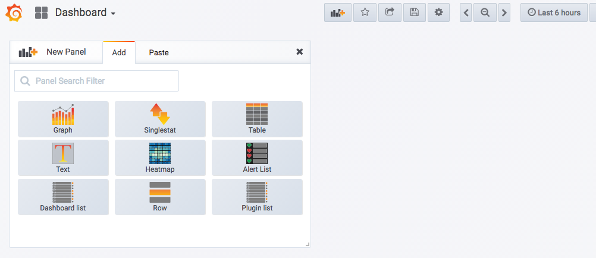
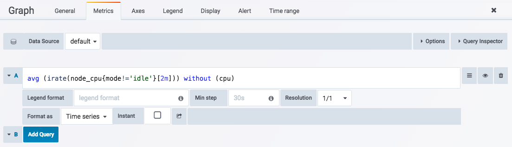

<!doctype html>
<html lang="en" class="no-js">
  <head>
    
      <meta charset="utf-8">
      <meta name="viewport" content="width=device-width,initial-scale=1">
      
      
      
      
      
      <link rel="icon" href="../../assets/favicon.png">
      <meta name="generator" content="mkdocs-1.4.2, mkdocs-material-9.0.15">
    
    
      
        <title>Grafana与数据可视化 - Prometheus Learning Path</title>
      
    
    
      <link rel="stylesheet" href="../../assets/stylesheets/main.113286f1.min.css">
      
        
        <link rel="stylesheet" href="../../assets/stylesheets/palette.a0c5b2b5.min.css">
      
      

    
    
    
      
        
        
        <link rel="preconnect" href="https://fonts.gstatic.com" crossorigin>
        <link rel="stylesheet" href="https://fonts.googleapis.com/css?family=Roboto:300,300i,400,400i,700,700i%7CRoboto+Mono:400,400i,700,700i&display=fallback">
        <style>:root{--md-text-font:"Roboto";--md-code-font:"Roboto Mono"}</style>
      
    
    
    <script>__md_scope=new URL("../..",location),__md_hash=e=>[...e].reduce((e,_)=>(e<<5)-e+_.charCodeAt(0),0),__md_get=(e,_=localStorage,t=__md_scope)=>JSON.parse(_.getItem(t.pathname+"."+e)),__md_set=(e,_,t=localStorage,a=__md_scope)=>{try{t.setItem(a.pathname+"."+e,JSON.stringify(_))}catch(e){}}</script>
    
      

    
    
    
  </head>
  
  
    
    
    
    
    
    <body dir="ltr" data-md-color-scheme="default" data-md-color-primary="indigo" data-md-color-accent="">
  
    
    
    <input class="md-toggle" data-md-toggle="drawer" type="checkbox" id="__drawer" autocomplete="off">
    <input class="md-toggle" data-md-toggle="search" type="checkbox" id="__search" autocomplete="off">
    <label class="md-overlay" for="__drawer"></label>
    <div data-md-component="skip">
      
        
        <a href="#grafana" class="md-skip">
          Skip to content
        </a>
      
    </div>
    <div data-md-component="announce">
      
    </div>
    
    
      

<header class="md-header" data-md-component="header">
  <nav class="md-header__inner md-grid" aria-label="Header">
    <a href="../.." title="Prometheus Learning Path" class="md-header__button md-logo" aria-label="Prometheus Learning Path" data-md-component="logo">
      
  

    </a>
    <label class="md-header__button md-icon" for="__drawer">
      <svg xmlns="http://www.w3.org/2000/svg" viewBox="0 0 24 24"><path d="M3 6h18v2H3V6m0 5h18v2H3v-2m0 5h18v2H3v-2Z"/></svg>
    </label>
    <div class="md-header__title" data-md-component="header-title">
      <div class="md-header__ellipsis">
        <div class="md-header__topic">
          <span class="md-ellipsis">
            Prometheus Learning Path
          </span>
        </div>
        <div class="md-header__topic" data-md-component="header-topic">
          <span class="md-ellipsis">
            
              Grafana与数据可视化
            
          </span>
        </div>
      </div>
    </div>
    
    
    
      <label class="md-header__button md-icon" for="__search">
        <svg xmlns="http://www.w3.org/2000/svg" viewBox="0 0 24 24"><path d="M9.5 3A6.5 6.5 0 0 1 16 9.5c0 1.61-.59 3.09-1.56 4.23l.27.27h.79l5 5-1.5 1.5-5-5v-.79l-.27-.27A6.516 6.516 0 0 1 9.5 16 6.5 6.5 0 0 1 3 9.5 6.5 6.5 0 0 1 9.5 3m0 2C7 5 5 7 5 9.5S7 14 9.5 14 14 12 14 9.5 12 5 9.5 5Z"/></svg>
      </label>
      <div class="md-search" data-md-component="search" role="dialog">
  <label class="md-search__overlay" for="__search"></label>
  <div class="md-search__inner" role="search">
    <form class="md-search__form" name="search">
      <input type="text" class="md-search__input" name="query" aria-label="Search" placeholder="Search" autocapitalize="off" autocorrect="off" autocomplete="off" spellcheck="false" data-md-component="search-query" required>
      <label class="md-search__icon md-icon" for="__search">
        <svg xmlns="http://www.w3.org/2000/svg" viewBox="0 0 24 24"><path d="M9.5 3A6.5 6.5 0 0 1 16 9.5c0 1.61-.59 3.09-1.56 4.23l.27.27h.79l5 5-1.5 1.5-5-5v-.79l-.27-.27A6.516 6.516 0 0 1 9.5 16 6.5 6.5 0 0 1 3 9.5 6.5 6.5 0 0 1 9.5 3m0 2C7 5 5 7 5 9.5S7 14 9.5 14 14 12 14 9.5 12 5 9.5 5Z"/></svg>
        <svg xmlns="http://www.w3.org/2000/svg" viewBox="0 0 24 24"><path d="M20 11v2H8l5.5 5.5-1.42 1.42L4.16 12l7.92-7.92L13.5 5.5 8 11h12Z"/></svg>
      </label>
      <nav class="md-search__options" aria-label="Search">
        
        <button type="reset" class="md-search__icon md-icon" title="Clear" aria-label="Clear" tabindex="-1">
          <svg xmlns="http://www.w3.org/2000/svg" viewBox="0 0 24 24"><path d="M19 6.41 17.59 5 12 10.59 6.41 5 5 6.41 10.59 12 5 17.59 6.41 19 12 13.41 17.59 19 19 17.59 13.41 12 19 6.41Z"/></svg>
        </button>
      </nav>
      
    </form>
    <div class="md-search__output">
      <div class="md-search__scrollwrap" data-md-scrollfix>
        <div class="md-search-result" data-md-component="search-result">
          <div class="md-search-result__meta">
            Initializing search
          </div>
          <ol class="md-search-result__list" role="presentation"></ol>
        </div>
      </div>
    </div>
  </div>
</div>
    
    
  </nav>
  
</header>
    
    <div class="md-container" data-md-component="container">
      
      
        
          
        
      
      <main class="md-main" data-md-component="main">
        <div class="md-main__inner md-grid">
          
            
              
              <div class="md-sidebar md-sidebar--primary" data-md-component="sidebar" data-md-type="navigation" >
                <div class="md-sidebar__scrollwrap">
                  <div class="md-sidebar__inner">
                    


<nav class="md-nav md-nav--primary" aria-label="Navigation" data-md-level="0">
  <label class="md-nav__title" for="__drawer">
    <a href="../.." title="Prometheus Learning Path" class="md-nav__button md-logo" aria-label="Prometheus Learning Path" data-md-component="logo">
      
  

    </a>
    Prometheus Learning Path
  </label>
  
  <ul class="md-nav__list" data-md-scrollfix>
    
      
      
      

  
  
  
    <li class="md-nav__item">
      <a href="../../catalogue/" class="md-nav__link">
        目录
      </a>
    </li>
  

    
      
      
      

  
  
  
    
    <li class="md-nav__item md-nav__item--nested">
      
      
      
      
      <input class="md-nav__toggle md-toggle " type="checkbox" id="__nav_2" >
      
      
      
        <label class="md-nav__link" for="__nav_2" id="__nav_2_label" tabindex="0">
          第1章 天降奇兵
          <span class="md-nav__icon md-icon"></span>
        </label>
      
      <nav class="md-nav" data-md-level="1" aria-labelledby="__nav_2_label" aria-expanded="false">
        <label class="md-nav__title" for="__nav_2">
          <span class="md-nav__icon md-icon"></span>
          第1章 天降奇兵
        </label>
        <ul class="md-nav__list" data-md-scrollfix>
          
            
              
  
  
  
    <li class="md-nav__item">
      <a href="../../quickstart/why-monitor/" class="md-nav__link">
        Prometheus简介
      </a>
    </li>
  

            
          
            
              
  
  
  
    <li class="md-nav__item">
      <a href="../../quickstart/prometheus-quick-start/" class="md-nav__link">
        初识Prometheus
      </a>
    </li>
  

            
          
            
              
  
  
  
    <li class="md-nav__item">
      <a href="../../quickstart/install-prometheus-server/" class="md-nav__link">
        安装Prometheus
      </a>
    </li>
  

            
          
            
              
  
  
  
    <li class="md-nav__item">
      <a href="../../quickstart/use-node-exporter/" class="md-nav__link">
        使用Node Exporter采集主机数据
      </a>
    </li>
  

            
          
            
              
  
  
  
    <li class="md-nav__item">
      <a href="../../quickstart/promql_quickstart/" class="md-nav__link">
        使用PromQL查询监控数据
      </a>
    </li>
  

            
          
            
              
  
  
  
    <li class="md-nav__item">
      <a href="../../quickstart/use-grafana-create-dashboard" class="md-nav__link">
        监控数据可视化
      </a>
    </li>
  

            
          
            
              
  
  
  
    <li class="md-nav__item">
      <a href="../../quickstart/prometheus-job-and-instance/" class="md-nav__link">
        任务和实例
      </a>
    </li>
  

            
          
            
              
  
  
  
    <li class="md-nav__item">
      <a href="../../quickstart/prometheus-arch/" class="md-nav__link">
        Prometheus核心组件
      </a>
    </li>
  

            
          
            
              
  
  
  
    <li class="md-nav__item">
      <a href="../../quickstart/SUMMARY/" class="md-nav__link">
        小结
      </a>
    </li>
  

            
          
        </ul>
      </nav>
    </li>
  

    
      
      
      

  
  
  
    
    <li class="md-nav__item md-nav__item--nested">
      
      
      
      
      <input class="md-nav__toggle md-toggle " type="checkbox" id="__nav_3" >
      
      
      
        <label class="md-nav__link" for="__nav_3" id="__nav_3_label" tabindex="0">
          第二章 探索PromQL
          <span class="md-nav__icon md-icon"></span>
        </label>
      
      <nav class="md-nav" data-md-level="1" aria-labelledby="__nav_3_label" aria-expanded="false">
        <label class="md-nav__title" for="__nav_3">
          <span class="md-nav__icon md-icon"></span>
          第二章 探索PromQL
        </label>
        <ul class="md-nav__list" data-md-scrollfix>
          
            
              
  
  
  
    <li class="md-nav__item">
      <a href="../../promql/what-is-prometheus-metrics-and-labels/" class="md-nav__link">
        理解时间序列
      </a>
    </li>
  

            
          
        </ul>
      </nav>
    </li>
  

    
      
      
      

  
  
  
    
    <li class="md-nav__item md-nav__item--nested">
      
      
      
      
      <input class="md-nav__toggle md-toggle " type="checkbox" id="__nav_4" >
      
      
      
        <label class="md-nav__link" for="__nav_4" id="__nav_4_label" tabindex="0">
          第3章 Prometheus告警处理
          <span class="md-nav__icon md-icon"></span>
        </label>
      
      <nav class="md-nav" data-md-level="1" aria-labelledby="__nav_4_label" aria-expanded="false">
        <label class="md-nav__title" for="__nav_4">
          <span class="md-nav__icon md-icon"></span>
          第3章 Prometheus告警处理
        </label>
        <ul class="md-nav__list" data-md-scrollfix>
          
            
              
  
  
  
    <li class="md-nav__item">
      <a href="../../alert/prometheus-alert-manager-overview/" class="md-nav__link">
        Prometheus告警简介
      </a>
    </li>
  

            
          
        </ul>
      </nav>
    </li>
  

    
      
      
      

  
  
  
    
    <li class="md-nav__item md-nav__item--nested">
      
      
      
      
      <input class="md-nav__toggle md-toggle " type="checkbox" id="__nav_5" >
      
      
      
        <label class="md-nav__link" for="__nav_5" id="__nav_5_label" tabindex="0">
          第4章 Exporter详解
          <span class="md-nav__icon md-icon"></span>
        </label>
      
      <nav class="md-nav" data-md-level="1" aria-labelledby="__nav_5_label" aria-expanded="false">
        <label class="md-nav__title" for="__nav_5">
          <span class="md-nav__icon md-icon"></span>
          第4章 Exporter详解
        </label>
        <ul class="md-nav__list" data-md-scrollfix>
          
            
              
  
  
  
    <li class="md-nav__item">
      <a href="../../exporter/what-is-prometheus-exporter/" class="md-nav__link">
        Exporter是什么
      </a>
    </li>
  

            
          
        </ul>
      </nav>
    </li>
  

    
  </ul>
</nav>
                  </div>
                </div>
              </div>
            
            
              
              <div class="md-sidebar md-sidebar--secondary" data-md-component="sidebar" data-md-type="toc" >
                <div class="md-sidebar__scrollwrap">
                  <div class="md-sidebar__inner">
                    

<nav class="md-nav md-nav--secondary" aria-label="Table of contents">
  
  
  
    
  
  
    <label class="md-nav__title" for="__toc">
      <span class="md-nav__icon md-icon"></span>
      Table of contents
    </label>
    <ul class="md-nav__list" data-md-component="toc" data-md-scrollfix>
      
        <li class="md-nav__item">
  <a href="#panel" class="md-nav__link">
    认识面板（Panel）
  </a>
  
</li>
      
    </ul>
  
</nav>
                  </div>
                </div>
              </div>
            
          
          
            <div class="md-content" data-md-component="content">
              <article class="md-content__inner md-typeset">
                
                  


<h1 id="grafana">Grafana与数据可视化</h1>
<p>在第1章的“初始Prometheus”部分，我们已经带领读者大致了解了Grafana的基本使用方式。对于Grafana而言，Prometheus就是一个用于存储监控样本数据的数据源（Data Source），通过使用PromQL查询特定Prometheus实例中的数据并且在Panel中实现可视化。</p>
<p>接下来，我们将带领读者了解如何通过Panel创建精美的可视化图表。</p>
<h2 id="panel">认识面板（Panel）</h2>
<p>Panel是Grafana中最基本的可视化单元。每一种类型的面板都提供了相应的查询编辑器(Query Editor)，让用户可以从不同的数据源（如Prometheus）中查询出相应的监控数据，并且以可视化的方式展现。</p>
<p>Grafana中所有的面板均以插件的形式进行使用，当前内置了5种类型的面板，分别是：Graph，Singlestat，Heatmap, Dashlist，Table以及Text。</p>
<p>其中像Graph这样的面板允许用户可视化任意多个监控指标以及多条时间序列。而Siglestat则必须要求查询结果为单个样本。Dashlist和Text相对比较特殊，它们与特定的数据源无关。</p>
<p>通过Grafana UI用户可以在一个Dashboard下添加Panel，点击Dashboard右上角的“Add Panel”按钮，如下所示，将会显示当前系统中所有可使用的Panel类型：</p>
<p></p>
<p>选择想要创建的面板类型即可。这里以Graph面板为例，创建Panel之后，并切换到编辑模式，就可以进入Panel的配置页面。对于一个Panel而言，一般来说会包含2个主要的配置选项：General（通用设置）、Metrics（度量指标）。其余的配置则根据Panel类型的不同而不同。</p>
<p>在通用设置中，除了一些Panel的基本信息以外，最主要的能力就是定义动态Panel的能力，这部分内容会在本章的“模板化Dashboard”小结中详细介绍。</p>
<p>对于使用Prometheus作为数据源的用户，最主要的需要了解的就是Metrics设置的使用。在Metric选项中可以定义了Grafana从哪些数据源中查询样本数据。<strong>Data Source</strong>中指定当前查询的数据源，Grafana会加载当前组织中添加的所有数据源。其中还会包含两个特殊的数据源：<strong>Mixed</strong>和<strong>Grafana</strong>。 Mixed用于需要从多个数据源中查询和渲染数据的场景，Grafana则用于需要查询Grafana自身状态时使用。</p>
<p>当选中数据源时，Panel会根据当前数据源类型加载不同的Query Editor界面。这里我们主要介绍Prometheus Query Editor，如下所示，当选中的数据源类型为Prometheus时，会显示如下界面：</p>
<p></p>
<p>Grafana提供了对PromQL的完整支持，在Query Editor中，可以添加任意个Query，并且使用PromQL表达式从Prometheus中查询相应的样本数据。</p>
<pre><code>avg (irate(node_cpu{mode!='idle'}[2m])) without (cpu)
</code></pre>
<p>每个PromQL表达式都可能返回多条时间序列。<strong>Legend format</strong>用于控制如何格式化每条时间序列的图例信息。Grafana支持通过模板的方式，根据时间序列的标签动态生成图例名称，例如：使用{{instance}}表示使用当前时间序列中的instance标签的值作为图例名称：</p>
<pre><code>{{instance}}-{{mode}}
</code></pre>
<p>当查询到的样本数据量非常大时可以导致Grafana渲染图标时出现一些性能问题，通过<strong>Min Step</strong>可以控制Prometheus查询数据时的最小步长（Step），从而减少从Prometheus返回的数据量。</p>
<p><strong>Resolution</strong>选项，则可以控制Grafana自身渲染的数据量。例如，如果<strong>Resolution</strong>的值为<strong>1/10</strong>，Grafana会将Prometeus返回的10个样本数据合并成一个点。因此<strong>Resolution</strong>越小可视化的精确性越高，反之，可视化的精度越低。</p>
<p><strong>Format as</strong>选项定义如何格式化Prometheus返回的样本数据。这里提供了3个选项：Table,Time Series和Heatmap，分别用于Table面板，Graph面板和Heatmap面板的数据可视化。</p>
<p>除此以外，Query Editor还提供了调试相关的功能，点击<strong>Query Inspector</strong>可以展开相关的调试面板：</p>
<p></p>
<p>在面板中，可以查看当前Prometheus返回的样本数据，用户也可以提供Mock数据渲染图像。</p>


                
              </article>
            </div>
          
          
        </div>
        
      </main>
      
        <footer class="md-footer">
  
  <div class="md-footer-meta md-typeset">
    <div class="md-footer-meta__inner md-grid">
      <div class="md-copyright">
  
  
    Made with
    <a href="https://squidfunk.github.io/mkdocs-material/" target="_blank" rel="noopener">
      Material for MkDocs
    </a>
  
</div>
      
    </div>
  </div>
</footer>
      
    </div>
    <div class="md-dialog" data-md-component="dialog">
      <div class="md-dialog__inner md-typeset"></div>
    </div>
    
    <script id="__config" type="application/json">{"base": "../..", "features": [], "search": "../../assets/javascripts/workers/search.208ed371.min.js", "translations": {"clipboard.copied": "Copied to clipboard", "clipboard.copy": "Copy to clipboard", "search.result.more.one": "1 more on this page", "search.result.more.other": "# more on this page", "search.result.none": "No matching documents", "search.result.one": "1 matching document", "search.result.other": "# matching documents", "search.result.placeholder": "Type to start searching", "search.result.term.missing": "Missing", "select.version": "Select version"}}</script>
    
    
      <script src="../../assets/javascripts/bundle.2a6f1dda.min.js"></script>
      
    
  </body>
</html>